MAVLinkSkyArc
Мост телеметрии MAVLink в Государственную систему идентификации БВС
Скачать MAVLinkSkyArc на RuStoreMAVLinkSkyArс: Android приложение для сбора MAVLink телеметрии БВС и передачи данных в Государственную систему идентификации БВС (ПП РФ №1701 30.11.2024) через платформу "Небосвод".
📡 Приём MAVLink телеметрии по сети Wi-Fi
Подключение к прошивкам дронов Betaflight, INAV, ArduPilot, PX4 с помощью аппаратуры управления ExpressLRS.
⚡ Идентификация полета БВС
Отправка полетных параметров в Государственную систему идентификации БВС через платформу "Небосвод".
📊 Индикация параметров полета
Отображение параметров полета на экране, положения БВС и оператора на карте 🗺️
📖 ОБЩАЯ ИНФОРМАЦИЯ
Программа MAVLinkSkyArc принимает полетные параметры по Wi-Fi на UDP порт 14550 по протоколу передачи полетных данных MAVLink и позволяет транслировать их в Государственную систему идентификации полетов БВС.
Поддерживаются прошивки дронов: Betaflight, INAV, ArduPilot, PX4.
Для получения информации от дрона может использоваться аппаратура управлния ExpressLRS в режимах:- Трансляция MAVLink телеметрии по Wi-Fi;
- Передача CRSF телеметрии по техноглогии ESP-NOW с ретрансляцией ее в формат MAVLink Wi-Fi при помощи дополнительной платы ESP32.
В этих режимах аппаратура ExpressLRS получает телеметрию с квадрокоптера и раздает ее по WiFi по протоколу MAVLink на UDP порт 14550, что позволяет подключать компьютерные программы MissionPlanner, QGroundControl (поддерживаемые специальными плагинами "Небосвод") и Android программу MAVLinkSkyArc для идентификации полета БВС.
Также возможно использование других устройств, передающих MAVLink телеметрию по Wi-Fi.
Передача телеметрии в Государственную систему идентификации БВС требует авторизации в системе "Небосвод" и наличия у БВС регистрационного номера.
Для работы приложения MAVLinkSkyArc необходима специальная настройка прошивки дрона и аппаратуры управления ExpressLRS для работы в режиме MAVLink-ELRS или CRSF->ESP-NOW->MAVLink.
📖 ИНСТРУКЦИЯ ПО РАБОТЕ С ПРОГРАММОЙ MAVLinkSkyArc
Интерфейс программы включает
Рабочие страницы:
- 🔐 Авторизация
- ✈️ Полет
- 📊 Телеметрия
- 🗺️ Карта
- 📋 Журнал
- ℹ️ О программе
Строку состояния, показывающюю исправность элементов, необходимых для приема телеметрии от БВС и трансляции ее в Государственную систему идентификации:
- 🌐 Поключение к интернет
- 🔐 Авторизация в системе "Небосвод"
- 🔌 Прием смартфоном данных телеметрии по WiFi
- 🛰️ Захват спутников (GPS Fix)
- ✈️ Трансляция полетных параметров в систему идентификации - разрешение на полет
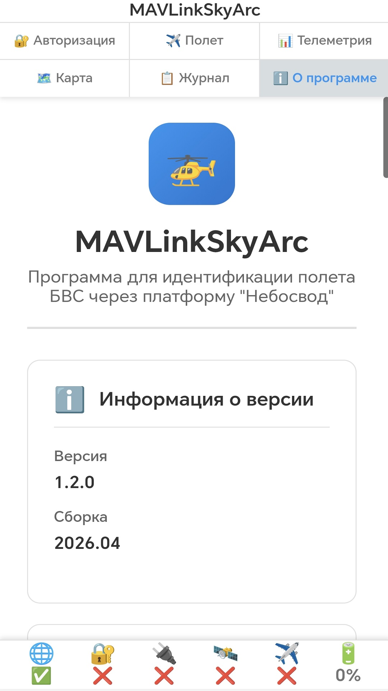
Общий вид программы
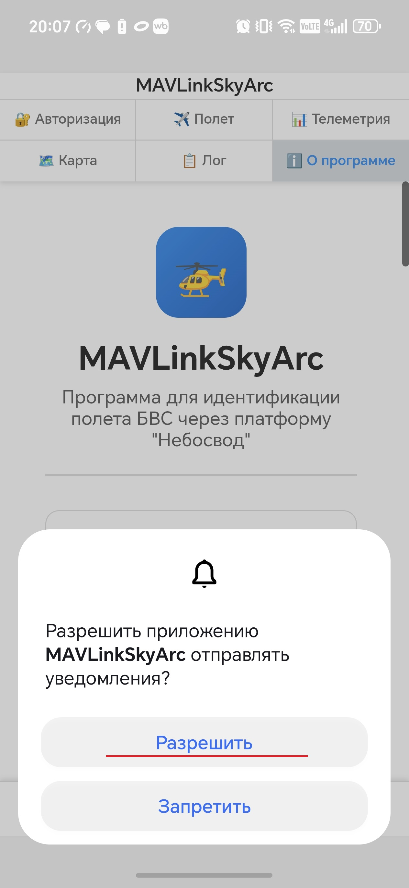
Разрешение уведомлений
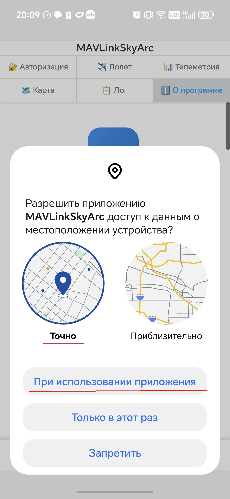
Разрешение Геолокации
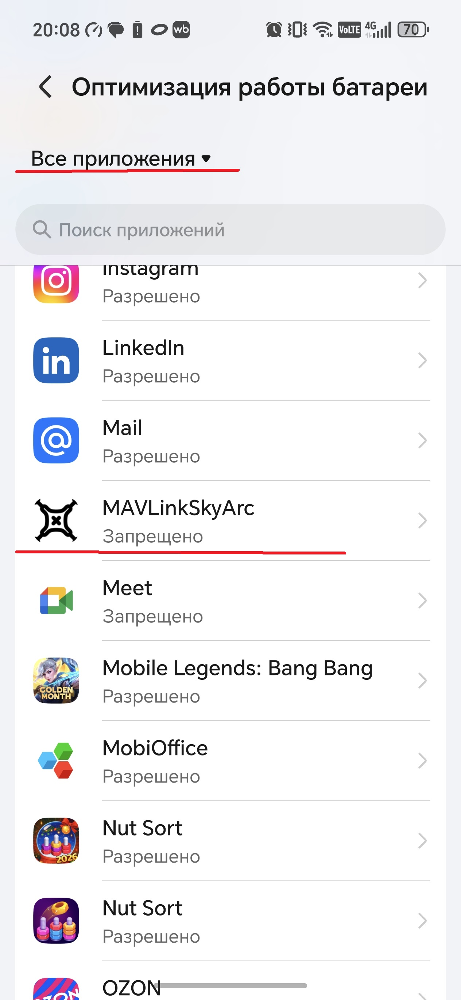
Запрет оптимизации батареи, шаг 1
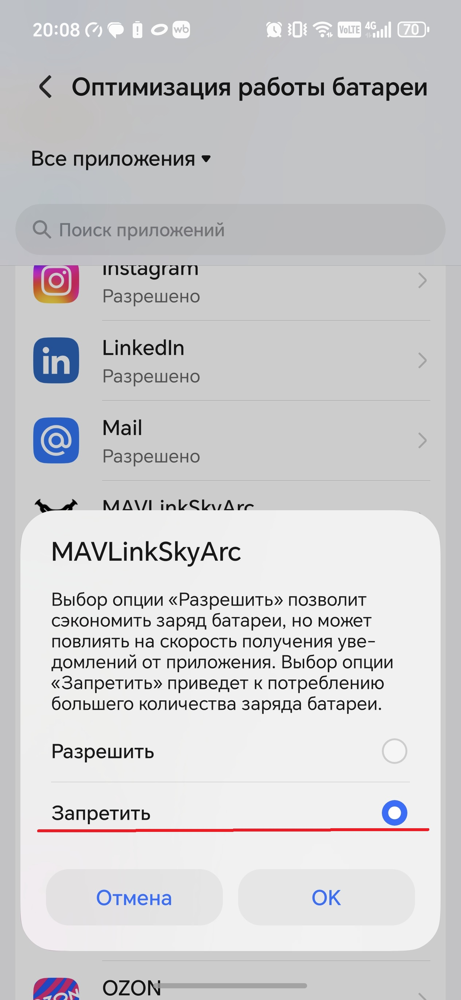
Запрет оптимизации батареи, шаг 2
⚠️ Для надежной работы, в том числе и в фоновом режиме, отключите оптимизацию батареи как для самой программы (запрашивается при первом запуске), так и в общих настройках Android!
⚠️ Рекомендуется использование режима с подключением ELRS аппаратуры к точке доступа Wi-Fi на смартфоне.
⚠️ Обязательно проверяйте стабильность приема данных телеметрии по Wi-Fi перед началом полета!
1Запуск аппаратуры и программы
- Включите на смартфоне точку доступа Wi-Fi, настроенную для подключения к ней Backpack ExpressLRS (или платы ESP32 при использовании CRSF телеметрии)
- Включите аппаратуру ExpressLRS
- Включите питание платы ESP32 при использовании CRSF телеметрии
- Проверьте подключение аппаратуры к точке доступа Wi-Fi смартфона
- Включите питание дрона
- Запустите приложение MAVLinkSkyArc
2 Авторизация в системе "Небосвод"
Перейдите на страницу "🔐 Авторизация" MAVLinkSkyArc и авторизируйтесь в системе "Небосвод"
При успехе, в строке состояния отобразятся символы 🔐✅ и программа автоматически перейдет на страницу "✈️ Полет".
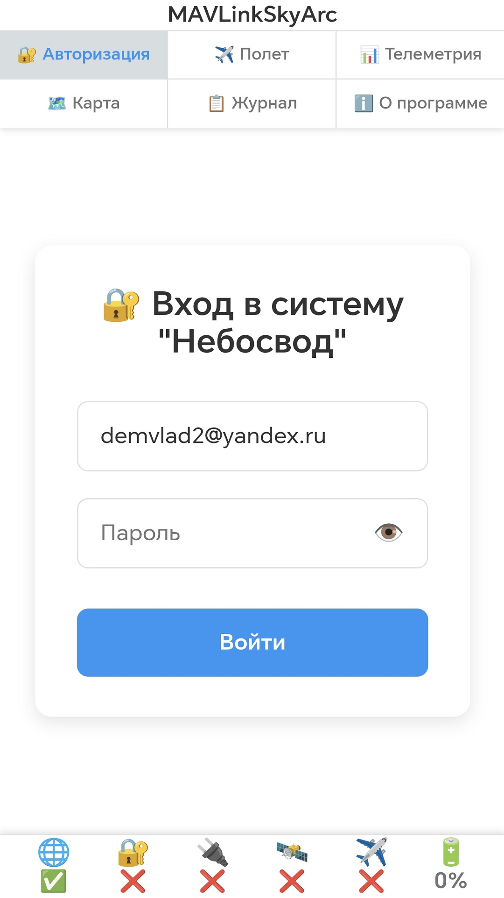
Авторизация
3 Включение трансляции параметров в Государственную систему идентификации
- Перейдите на страницу "✈️ Полет".
- Введите учетный номер БВС
- При наличии всех необходимых условий кнопка управления будет активной, с надписью "✅Система исправна! 👇Нажми для полета!". В противном случае кнопка будет заблокирована с надписью "❌Система не готова! 🛑Полет запрещен!"
- Нажмите на кнопку управления. Начнется трансляция параметров полета в систему идентификации. Кнопка изменит цвет на зеленый, с надписью "✈️✅Полет разрешен! 📡Трансляция данных!".
- В строке состояния появится разрешение на полет ✈️✅
- Выполните полет. В случае отказов трансляции в процессе полета на кнопке управления отображается сообщение "⚠Отказ трансляции! 👎Заверши полет!"
- По завершению полета отключите трансляцию параметров нажатием на кнопку управления
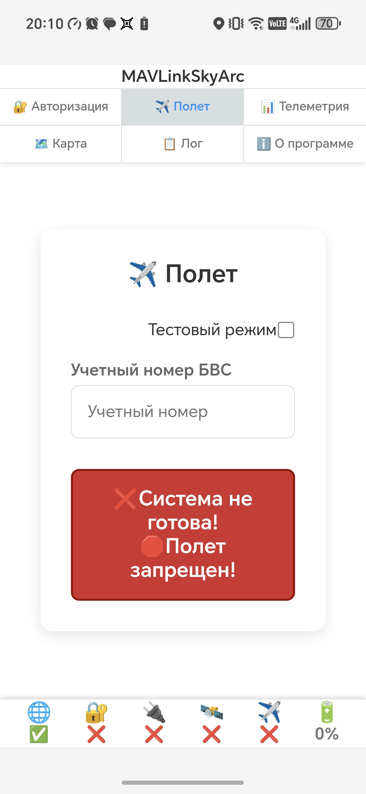
Система не готова к работе
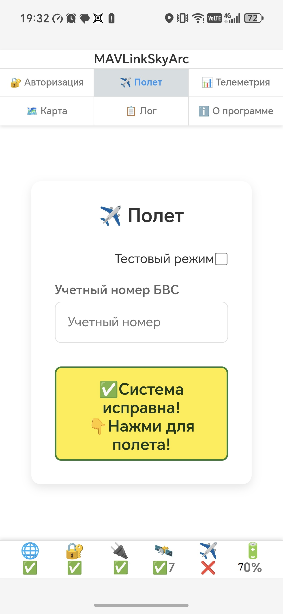
Система готова к работе
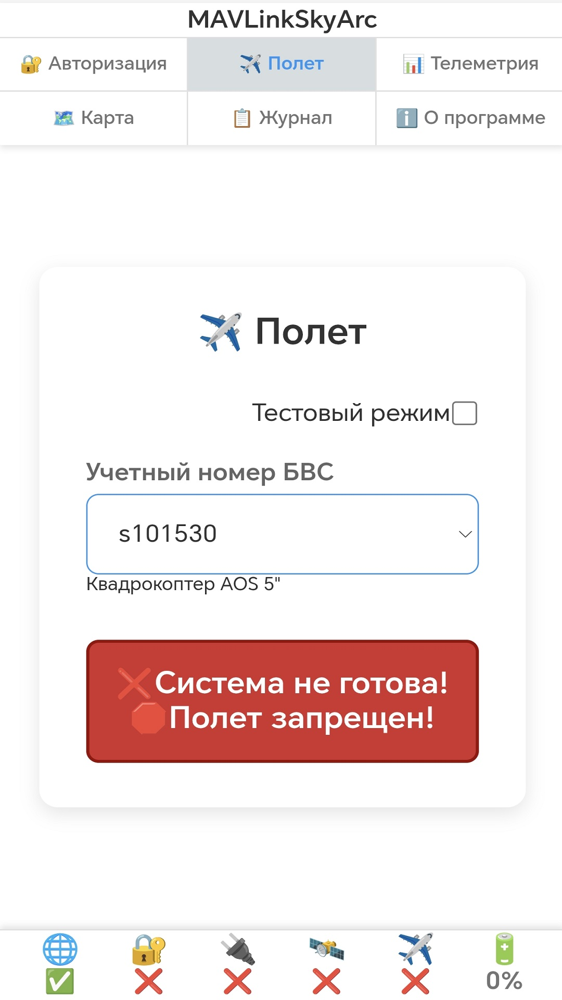
Полет разрешен
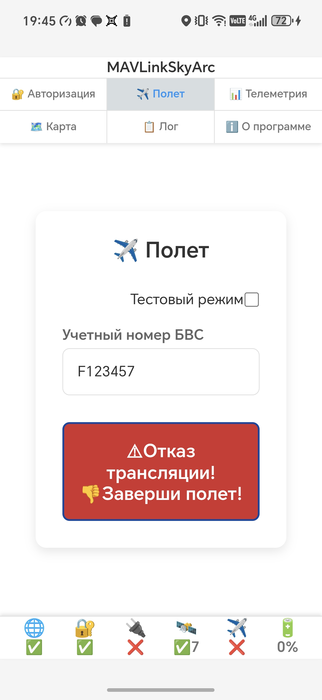
Отказ системы в процессе полета
Во время полета включение "Тестового режима" заблокировано.
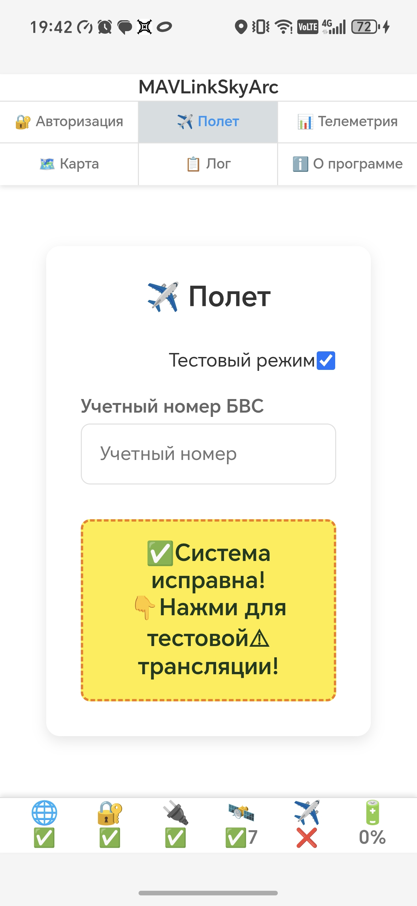
Система готова к тестовой трансляции
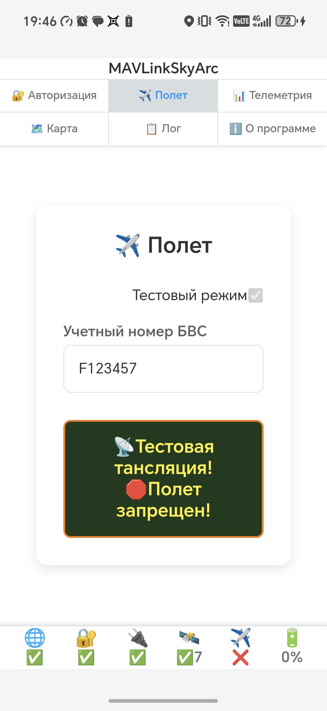
Тестовая трансляция параметров
4 Дополнительные функции
На странице "🗺️ Карта" отображаются позиция пилота и дрона, а также траектория полета
Кнопки управления позволяют центрировать карту на пилоте или дроне а также очистить трэк полета.
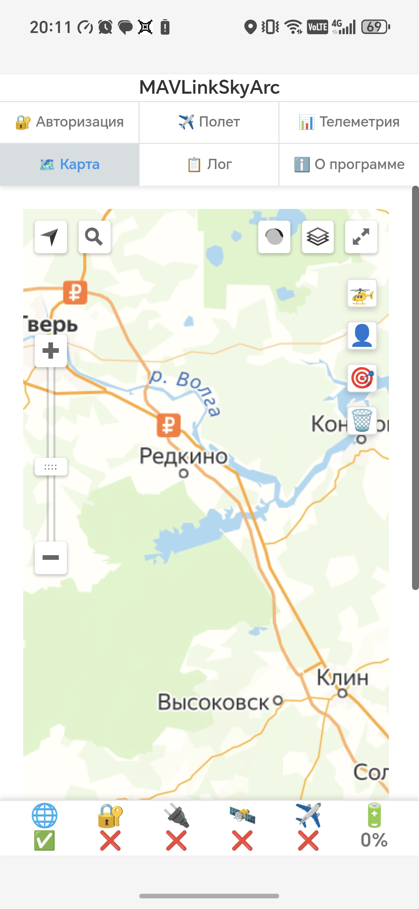
Карта
На странице "📋 Журнал" выводятся ошибки при работе программы.
Просьба сообщить при их возникновении.
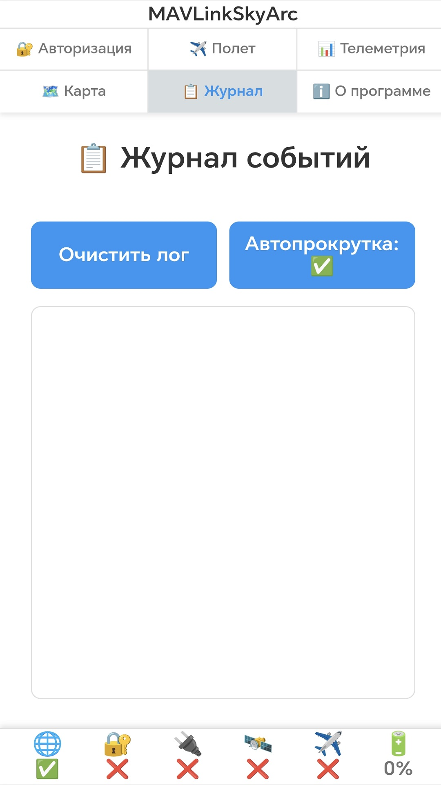
Журнал
📖 ИНСТРУКЦИЯ ПО НАСТРОЙКЕ РЕЖИМА MAVLink-ELRS
💡 Требования для режима MAVLink-ELRS
Поддерживаются прошивки:
- Betaflight, начиная с версии 2025.12.1
- INAV
- ArduPilot
- PX4
Минимальная версия ExpressLRS
Transmitter/receiver firmware: 3.5.0
TX Backpack firmware: 1.5.0
Инструкция по настройке режима для прошивок Betaflight, INAV, ArduPilot, PX4 приведена в руководстве ExpressLRS.
Далее приведено полное описание настройки аппаратуры и прошивки Betaflight для режима MAVLink-ELRS.
📖 ИНСТРУКЦИЯ ПО НАСТРОЙКЕ РЕЖИМА CRSF->ESP-NOW->MAVLink
💡 Требования для режима CRSF->ESP-NOW->MAVLink
Для ретрансляции CRSF ESP-NOW телеметрии от аппаратуры ELRS в Wi-Fi раздачу по протоколу MAVLink необходима дополнительная плата ESP32 со специальным ПО.
Далее приведено полное описание настройки аппаратуры и прошивки Betaflight для режима CRSF->ESP-NOW->MAVLink.